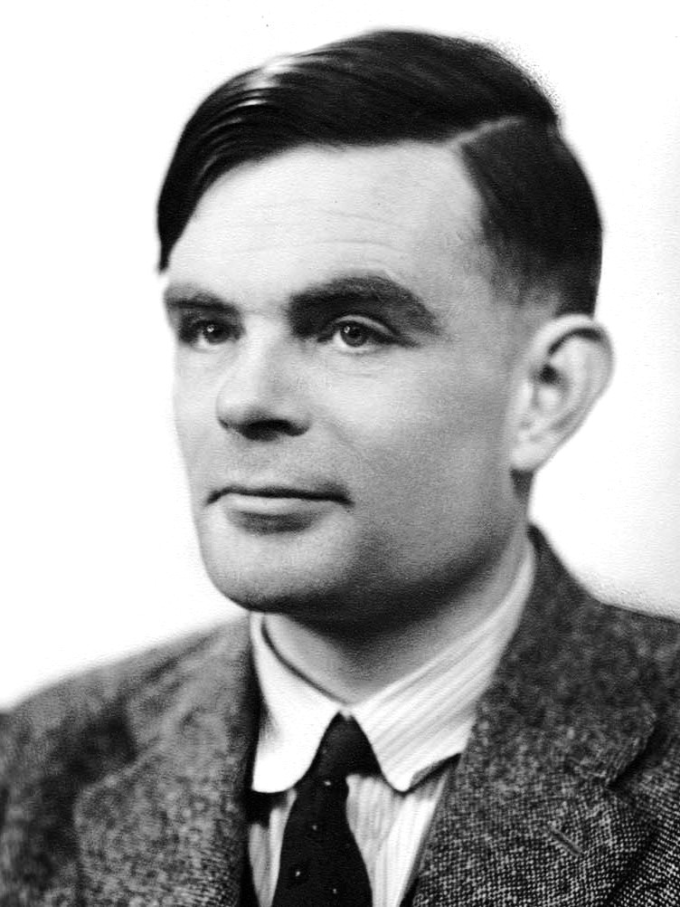
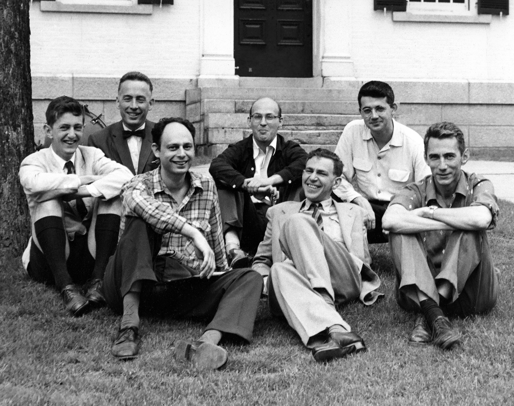

A weighted sum describes how an output varies with its inputs. The intercept sets a baseline.
Toy example
Predicted score = 40 + 5 × study hours 4 hours → 60 points The slope is 5 points per extra hour.
A linear relationship is a modeling assumption. Choosing a linear model is not a claim that reality is always linear; it is a choice of representation. Sometimes that simplicity is worth more than perfect accuracy.
Concepts · Statistics
How do we choose the line? Minimize error.
Residual: rᵢ = yᵢ − ŷᵢ Choose w and b to minimize Σᵢ (yᵢ − ŷᵢ)²yᵢ is an observed response; ŷᵢ is the model’s prediction for that example.
Candidate predictions
Residuals
Sum of squared errors
Line A
−2, +2
4 + 4 = 8
Line B
0, +5
0 + 25 = 25
Squaring prevents positive and negative errors from canceling, and penalizes large misses more. Line A fits these observations better.
A better fit on training data still needs evaluation on unseen data.
Era I — Statistics 1838–1944 · Logistic Regression
P(next state | entire history) = P(next state | current state)The Markov assumption: earlier history adds no information once the current state is known.
Today ↓ / Tomorrow →
Sunny
Rainy
Sunny
0.8
0.2
Rainy
0.4
0.6
Illustrative transition probabilities. Each row sums to 1.
If today is rainy, this model predicts 60% rain tomorrow, regardless of yesterday. Whether that simplification is useful depends on the chosen state.
Concepts · Statistics
What if we cannot observe the state?
Hidden states
Weather today → weather tomorrow States evolve through transitions.
→
Observations
Umbrella today · umbrella tomorrow Each state can produce observable evidence.
Ordinary Markov chain
We observe the current state and predict the next state.
Hidden Markov model
We observe indirect signals and infer the hidden state sequence.
An umbrella suggests rain, but does not prove it. Combine state transitions + observation probabilities to reason under uncertainty.
Can we make “a calculation carried out by precise rules” mathematically exact?
Alonzo Church: functions. Lambda calculus expresses computation through functions applied to arguments.
Alan Turing: a machine. An unbounded tape, a read/write head and rules for changing symbols and moving.
Same computational power. Both formalisms describe exactly the same class of computable functions.
The thesis: Anything that can be computed by a clear, finite, mechanical step-by-step procedure can be computed by a Turing machine. It does not say that every problem is computable.
Concepts · Computation & Turing
A Turing machine: read → apply a rule → move
Each step depends only on the current state + scanned symbol. Repeat until a halting state is reached; some computations run forever.
Concepts · Computation & Turing
Three different questions about an algorithm
Computability
Does an algorithm exist that always solves the problem?
Efficiency
If it exists, how much time and memory does it require?
Implementation
Can we run it on the hardware available to us?
Undecidable ≠ merely slowExample: no general algorithm can decide whether every arbitrary program/input pair will halt.
Equivalence of formal models and undecidability are mathematical results. The link to informal “effective calculation” is the thesis.
Era II — Computation Theory 1940s–50s · Chess Programs
Turing and Champernowne faced a useful challenge: clear rules, but far too many possible continuations to explore exhaustively.
1 · Search. Look ahead at candidate moves and possible replies.
2 · Evaluate. Score positions using material, mobility and development.
3 · Choose. Use those estimates to select a promising move.
Search + evaluation turns a huge decision space into a manageable procedure.
1952: execution on paper. Turing carried out the algorithm by hand. Specifying a procedure and running it on available hardware are different milestones.
Concepts · Computation & Turing
Playing chess: search + evaluation
Generate
List legal moves and possible opponent replies.
→
Look ahead
Explore continuations to a limited depth.
→
Evaluate
Score resulting positions; use likely replies to choose a move.
10 choices at each step → 10⁴ = 10,000 paths after 4 stepsToy branching example: the number of possibilities grows rapidly with depth.
A heuristic estimates which positions or paths look promising. It makes search practical, but need not identify the best possible move.
Era II — Computation Theory 1950 · The Imitation Game
From “thinking” to an observable test
In his 1950 paper Computing Machinery and Intelligence, Turing reframes “Can machines think?” as a question about conversational behavior. He proposed a way to make the question testable: the imitation game.

Alan Turing
A human
Identity concealed
A machine
Identity concealed
↕ Typed messages only — no face, voice or body language ↕
A human examiner
Asks questions and tries to identify which respondent is the machine.
The test: can the examiner reliably tell them apart under the chosen protocol?
The shift: evaluate what a machine does. Conversational success alone does not establish consciousness or settle every meaning of intelligence.
Concepts · Computation & Turing
What does the imitation game measure?
An operational test
Specify a text conversation, an examiner and a protocol. Measure how reliably the examiner distinguishes human from machine.
Scope of the evidence
The result concerns conversational behavior under that protocol. It does not, by itself, establish consciousness or inner experience.
A test makes a capability measurable. Its result supports only the claims that the test actually measures.
Discussion: could a system be good at planning or perception but poor at imitating human conversation?
Chapter III
ERA III:Cybernetics & Neurons
1943 – 49
Era III — Cybernetics & Neurons 1943–49
From biology to the first artificial neuron
1943
McCulloch & Pitts Neuron — What does a single processing unit compute?
An influential logical model of idealized neural activity, without a learned-weight rule.
1948
Wiener Publishes “Cybernetics” — How does a whole system regulate its own behavior?
The science of regulatory systems & feedback — a field at AI's root.
1949
Hebb’s Learning Postulate — How do neural connections change with experience?
Correlated neural activity can strengthen connections — inspiration for later learning rules.
Era III — Cybernetics & Neurons 1943 · McCulloch–Pitts Neuron
One of the first algorithms able to perform automated reasoning for theorem proving — it explores a search tree from an hypothesis toward the statement to prove.
Proved 38 of 52 theorems in chapter 2 of Principia Mathematica
For one, found a more elegant proof than the book's own
General Problem Solver · 1957–61
Uses a new search method, means-ends analysis, to solve tasks like theorem proving or the Tower of Hanoi.
Concepts · The birth of AI
Turn reasoning into a search problem
Representation
Encode known statements, a target and valid inference rules.
→
Legal operations
Apply a rule to derive another statement.
→
Search strategy
Choose which deduction or subgoal to explore next.
Known: A and (A ⇒ B) → derive B Known: B and (B ⇒ C) → derive CToy proof: find a chain of valid deductions that reaches the goal C.
Inference rules determine which steps are valid. Heuristics determine which valid steps to try first.
Concepts · The birth of AI
Means–ends analysis: work on the gap
General Problem Solver: compare the current state with the goal.
Find a difference
Goal: have a book at home. Current state: book is at the library.
→
Choose an operator
Borrow the book. Precondition: be at the library with a valid card.
→
Create subgoals
Get the card and reach the library, then borrow the book.
Actions may require subgoals before they can be applied. A useful heuristic organizes search; it does not guarantee that every task is solvable.
Era IV — The Birth of AI 1956 · Dartmouth Workshop

Participants in the 1956 Dartmouth summer research project
“Artificial Intelligence” is born
The 1955 proposal names “artificial intelligence”; the workshop follows in 1956
Proposal authors: McCarthy, Minsky, Rochester and Shannon
An organizing milestone connecting existing research traditions
A new kind of artificial neuron, inspired by the McCulloch & Pitts design, that can automatically update its weights from inputs and expected outputs.
Supervised mistake-driven updates — distinct from Hebbian learning and the delta rule
An important precursor of later neural learning systems
Modern MLPs generally use differentiable nonlinear units and backpropagation
Concepts · The birth of AI
The perceptron learns from mistakes
ŷ = 1 if w · x + b ≥ 0, else 0 w ← w + η(y − ŷ)x · b ← b + η(y − ŷ)y ∈ {0, 1} is the target; ŷ is the prediction; η > 0 is the learning rate.
Predict and compare
Show a labeled example. Compute the prediction and the difference y − ŷ.
Update and repeat
Correct prediction → no update. Wrong prediction → adjust weights and bias toward the target.
Unlike Hebbian co-activity, this update needs a correct answer. It is a supervised, mistake-driven rule; the delta rule is a different learning algorithm.
Concepts · The birth of AI
What can one perceptron represent?
Decision boundary: w₁x₁ + w₂x₂ + b = 0A straight line in two dimensions; a hyperplane with more inputs.
XOR: opposite corners share a class
Geometry limits learning
XOR cannot be separated by one straight line.
More training cannot fix an insufficient representation. Networks of units can represent richer boundaries.
The perceptron converges on linearly separable training data. If no separating boundary exists, mistakes need not stop.
Era IV — The Birth of AI 1958–59 · LISP & “Machine Learning”
Choose one idea and explain it in your own words. Use an example or an interactive experiment to support your explanation.
Sources and further reading
Follow the sources
Image, video and research credits remain beside the material they support. The reading companion keeps the explanations and source links for this part.